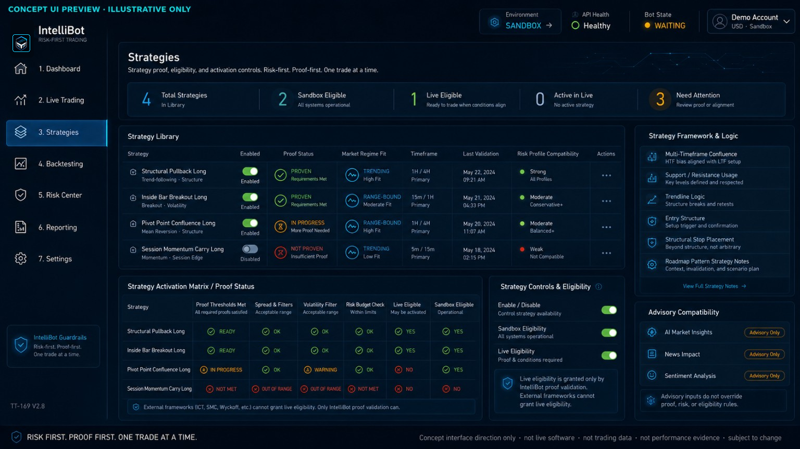
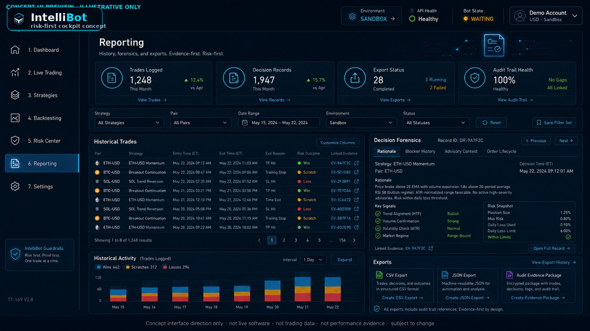
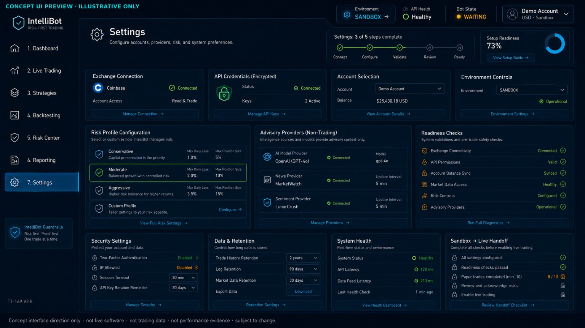

01 · Dashboard. Planned command-center view for readiness, risk, bot state, market regime, advisory context, active trade status, and recent decisions.
IntelliBot is being designed as a local-first, non-custodial crypto automation framework for Coinbase Spot. The product direction combines deterministic risk controls, strategy proof, sandbox validation, explainable decisioning, and education-first supervision before any live-capital exposure.
These current concept panels show the intended product experience if IntelliBot’s risk-first architecture were represented as a full application cockpit today. They are mockups for product-direction communication only, not released software, beta evidence, live trading data, or performance proof.






Most trading-bot narratives over-index on speed, signals, and autonomy. IntelliBot is being built around a different premise: a retail trading system should be able to explain why it is trading, why it is waiting, why it is blocked, and what evidence supports the current state.
The target product is not a black-box signal machine. It is a supervised automation cockpit where strategy proof, risk eligibility, account safety, operational readiness, and user understanding are first-class product requirements.
These boundaries are intentional. They constrain execution complexity so the platform can prove risk governance, strategy validation, and user-control workflows before any broader market surface is considered.
| Area | Current product direction | Reason it matters |
|---|---|---|
| Exchange scope | Coinbase Spot only for the initial active trading surface. | Concentrates integration, account-safety checks, product discovery, fees, precision, order behavior, and diagnostics around one controlled venue. |
| Trading direction | Long-only active trading. | Avoids leverage, margin, derivatives, liquidation mechanics, and short-side complexity during the foundational proof cycle. |
| Active exposure | Maximum one active trade at any time by default. | Keeps the active risk event explainable, auditable, and recoverable. Concurrent trading requires future portfolio-risk architecture and is not treated as a simple tier unlock. |
| Custody model | Non-custodial software direction; users retain their exchange accounts and funds. | IntelliBot is not designed to take custody, pool funds, transfer assets, or act as an exchange. |
| API permissions | No withdrawal permissions in the intended exchange API configuration. | Trading automation should not require withdrawal authority. Credential and permission safety are part of the trust model. |
| Live readiness | Backtesting before trust; sandbox before live capital. | Strategy proof and simulated execution must precede any potential production arming path. |
| AI role | AI, sentiment, and news catalyst intelligence are advisory/risk-context systems only. | AI cannot open trades, increase profile risk, bypass RiskManager, bypass AccountSafetyWatchdog, or create live eligibility. |
Strategies do not get a direct line to the exchange. Signals must pass through risk, account, execution, persistence, and UI audit surfaces before becoming an order lifecycle event.
The application is intended to feel like a trading operations console, not a single generic dashboard. Information density increases where it belongs: the Live Trading cockpit, Strategy Proof, Backtesting, Risk Center, and Reporting surfaces.
Shows whether the bot is safe, ready, blocked, armed, or inactive. Prioritizes environment, API health, equity, drawdown, readiness, market regime, bot state, and emergency status.
Owns the embedded candidate screener, integrated chart, active-position lifecycle, advisory context, guardrails, decision log, catalyst timeline, and emergency controls.
Shows which strategies exist, which are enabled, which are unproven, which are sandbox verified, and which are disabled by market regime or deteriorating evidence.
Models fees, spread, slippage, drawdown, sample size, scenario behavior, parameter sensitivity, same-candle arbitration, and promotion evidence before trust is granted.
Displays profile limits, equity risk, drawdown state, cooldowns, volatility caps, account-safety blockers, kill switch readiness, and live-arming restrictions.
Connects completed trades, skipped trades, blocked decisions, simulated outcomes, restart events, audit records, and post-trade learning into reviewable history.
Owns exchange/account setup, encrypted credential configuration, risk-profile configuration, provider/source settings, security, diagnostics, and readiness checks.
The following systems are product commitments and architecture direction. They are described as development scope and roadmap intent, not as currently released functionality.
Strategies are planned to move through proof states such as Unproven, Backtested, Sandbox Verified, Live Eligible, Disabled by Market Regime, and Retired or Degraded. The objective is to prevent a strategy from becoming live merely because it exists.
One open position means one active risk event, one managed bracket lifecycle, one account-exposure path, one restart/reconciliation requirement, and one clear audit trail. This is treated as a core safety posture, not a limitation.
Conservative, Balanced, Aggressive, and Observer profiles are planned as enforceable behavior sets. A profile change applies to the next trade; the risk constants active at entry remain frozen for the full lifecycle of an open position.
Observer is planned as a non-live profile that uses conservative signal and risk gates while forcing execution through sandbox or internal simulation. It can produce decision cards, simulated fills, and explanations without live equity risk.
Trading readiness is expected to include API health, account selection, credential safety, no-withdrawal configuration, risk profile review, sandbox evidence, strategy proof, data quality, equity-floor behavior, and restart/reconciliation checks.
IntelliBot should tell the operator when it is waiting because spread is too wide, data is stale, liquidity is insufficient, a strategy is unproven, a cooldown is active, news-risk suppression applies, or market structure has not qualified.
Pullback and retracement logic belongs to market-structure entry qualification. Drawdown and adverse excursion belong to after-entry risk management. IntelliBot’s planning separates these concepts to prevent unsafe strategy logic.
Breakout, pullback, and swing entries are planned to validate resistance, support, trendline behavior, VWAP or pivot confluence, reward/risk after costs, and stop placement before an entry can become eligible.
The planned exit model includes fee-adjusted break-even behavior, Profit Guard after TP1 progress, compound thesis invalidation handling, protective-stop partial-fill behavior, and staged emergency exit logic for API uncertainty.
The planning baseline includes schema-readiness work for active-trade management state, one-active-trade enforcement, drawdown persistence, synthetic candle markers, exit settings, and strategy proof status. These are engineering controls, not regulatory certification or audit attestation.
The early strategy direction remains long-only and Coinbase Spot scoped. Strategy candidates are intended to be evaluated through the same signal contract, RiskManager, backtesting, sandbox, and live-eligibility workflow.
| Strategy area | Planned direction | Control requirement |
|---|---|---|
| Core alpha families | ORB 1m, scalp 1m, scalp 5m, and swing 15m strategy families remain part of the early strategy architecture. | Each must pass deterministic backtesting, modeled costs, sandbox validation, risk gates, and account-safety controls before any live eligibility. |
| Structural roadmap candidates | VWAP Pullback, Trend Continuation Pullback, Breakout Momentum, Range Support Bounce, Volume Expansion, and Market Structure classification. | Roadmap candidates only; they cannot bypass the proof workflow or convert public interest into live authorization. |
| Pattern roadmap candidates | Inside Bar Breakout Long, Pivot Point Confluence Long, and Session Momentum Carry Long. | Must define structure, stop placement, entry invalidation, session behavior, cost-aware reward/risk, and backtest/sandbox evidence. |
| Market regime | Risk-On, Neutral, High Volatility, Trend Exhaustion, Chop/Sideways, Risk-Off, and Data Unreliable contexts may influence eligibility and explanations. | Regime classification can restrict or explain behavior; it cannot authorize a trade that fails risk, account, proof, venue, or data gates. |
The planned mode system controls information density, explanation depth, and advanced-parameter exposure. It does not weaken risk constraints.
AI, sentiment, and news catalyst modules may summarize market context, source tier, severity, confidence, affected assets, and potential risk implications. They are not order engines.